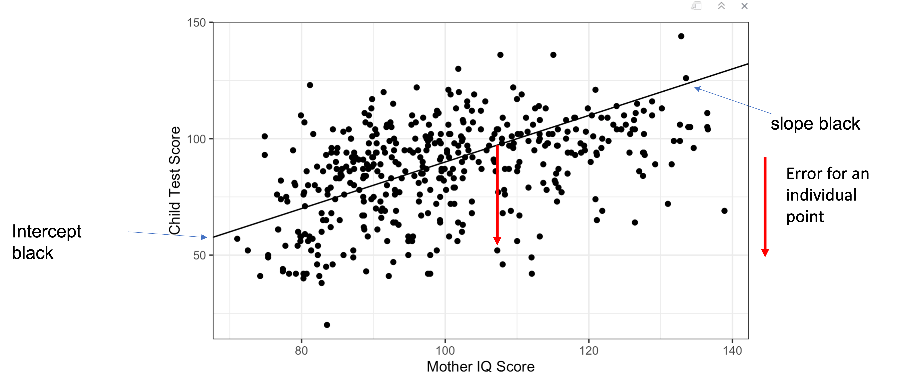
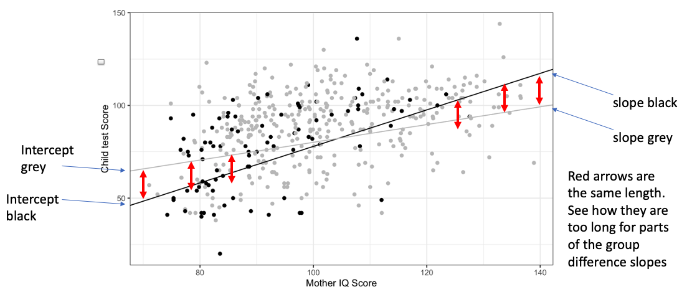
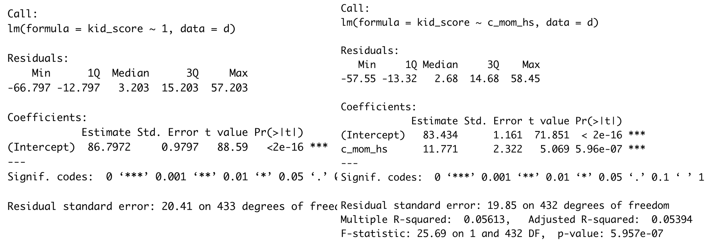

The lecture materials, including and and R files are downloaded from here as a zip file. You can upload the zip file directly on to the R server and it will populate a new folder with the files and data files automatically.
Interactions
When one variable moderates the effect of another variable on the outcome variable, Or
When a coefficient for one predictor changes its size when it moves between the levels or values of another predictor, Or
The change that one predictor predicts for the outcome variable depends on a specific level of another predictor
Moderation – a process for exploring the differing conditions under which two or more variables may work together.
In a simple regression, such as below, we test the effect of a single predictor on our dependent variable. In this case, the IQ of a mother on a child’s test score.

Simply regression
If we were to add in another variable that groups the data somehow, perhaps mother’s high school completion (Yes or No), then we may see that there are two lines that represent the two groups in a plot:
In the example above, there is no interaction, regardless of group, child test scores increase as a constant rate from an effect of Mother’s IQ. One may be slightly higher, indicating one group typically shows a greater IQ, but this increases at a constant rate.
In the example below, the lines cross, which means that we have an interaction. Something in the two predictors, IQ and high school completion means that they interact with each other, and have an influence on each other as well as the dependent variable.
 ### What are interaction terms?
Model for multiple regression with two independent predictors: \(Y=𝑏_0+ 𝑏_1𝑋_1 + 𝑏_2𝑋_2 + 𝑒\)
We interpret each predictor as representing a value of the variable’s influence on the outcome variable while holding all other predictors constant
In the diagram of the multiple regression model below, note that \(X_1\) and \(X_2\) do not talk to each other – only Y
Sometimes, we need to consider one variable’s influence on the outcome variable at different levels of another predictor: we need interactions. These are expressed like this in the equation: \(Y=𝑏_0 + 𝑏_1X_1 + 𝑏_2X_2 + b_3\times(X_1𝑋_2)+ 𝑒\)
See how in the diagram below, \(X_1\) and \(X_2\)do talk to each other – and they both talk to Y as well
Interactions are the product term of two (or more) predictors + We multiply two (or more) variables together + You can do this outside the model and create a new variable in your dataset + Or you can write it into your model formula
Introducing an interaction term means that the predictors within the term are no longer acting independently of each other + Interaction terms tend to strengthen or weaken the coefficients’ independent effects
Now, a predictor’s effect is conditional upon the level of another predictor (example coming)
When are interaction terms used?
Theory may predict them, and so research questions/hypotheses may predict them.
Study design may implicitly suggest them (groups?)
Results may suggest them + Regression coefficients that seem large when modelled independently may suggest the need for an interaction term + Make sure you are aware of where you are in the analysis workflow + Don’t just add them + Save any unplanned additions of interaction terms for an exploratory analysis phase…
Statistical Power of Interactions
Many effect sizes in psychology hover around Cohen’s d = 0.4
Based upon an effect size like this: + The power of an interaction can be a small as 1/16th of the independent effects within a model (Gelman et al. 2020) + This is for ANOVA and regression methods + This is when all the assumptions of the model are met + Most models violate model assumptions in some way + Although relatively tolerant of violations: + Power of the effects are thus reduced further…
Preparation of data for using interactions
Centre or standardise your continuous variables as standardising puts both predictors on the same scale. So interpreting the effect of one predictor on the other will be using the same scale of units
Consider how to use your categorical variables + Dummy coding..? + Sum coding..? + Making new binary variables…? + Coercing a binary variable to numeric class and mean centring + (so many choices! So little time!)
Building a model with interactions
Plan to build the model suggested by your research questions/hypotheses/theory. If that includes the interaction term, build it as the first model. If not, + Build an independent predictor model first + Build a further model that includes independent and interaction terms
Question: does a study design that uses different groups of people, implicitly motivate an interaction term?
This implies more than one model; multiple regression equals multiple models
A cautious and conservative approach to multiple regression is to create several models, each one building upon the next + These are called “nested” models + Every model uses exactly the same data + The latest model has all of the previous models within it + The latest model can differ by +1 predictor or more

Nested models
What model to report?
You can inspect the \(R^2\) or adj. \(R^2\) values to see if the more complex model explains more variance in the outcome variable. But more principled is to use an inferential test: + Use anova() to formally test the null hypothesis that two models explain the same amount of variance in the outcome variable = model comparison + If so, p-value is > .05, + we fail to reject the null hypothesis + AND we choose the simpler model + If the p-value of the anova < .05 + we reject the null hypothesis + we choose the more complex model
### Hazard Warning!
This is where p-hacking, cherry picking and HARKing can occur really easily. Strategies to defend against such questionable research practices: (remember from PSYC123 last year) + State clearly whether you are in confirmatory or exploratory analysis mode + Explain your process to yourself and your future reader before you start (at best in a pre-registration; at the very least before you begin) + Report all models – use a script such as .Rmd file or an interactive notebook so that the process is recorded and can be reproduced + Be honest and comprehensive in your reporting.
Loading required package: carData
lattice theme set by effectsTheme()
See ?effectsTheme for details.
library(broom)library(gridExtra)
Attaching package: 'gridExtra'
The following object is masked from 'package:dplyr':
combine
library(PerformanceAnalytics)
Loading required package: xts
Loading required package: zoo
Attaching package: 'zoo'
The following objects are masked from 'package:base':
as.Date, as.Date.numeric
Attaching package: 'xts'
The following objects are masked from 'package:dplyr':
first, last
Attaching package: 'PerformanceAnalytics'
The following object is masked from 'package:graphics':
legend
d <-read_csv("KidIQ.txt", col_types =cols(mom_work =col_skip()))
Notice how I have turned the knitr::opts_chunk$set(include = TRUE) line of code above to TRUE, this is what prints the code and output when you knit the document. Switching TRUE to FALSE will stop the code from printing out when you knit - try it. You can’t break anything!
Last week, we worked with multiple regression models that contained both continuous and categorical predictors. This week we continue to work with a mix of predictor variables and introduce the next step - interaction terms.
When an interaction term is entered into a model and is found to be significant (p < .05), this means that the rate of change in the outcome variable changes as the levels in the predictor variables change. We have to consider the independent effects of the predictors that are in the interaction term and infer whether the interaction effect is a weakening or a strengthening of the outcome variable. Here is a plot to illustrate what I mean:
Visualise
ggplot(d, aes(mom_iq, kid_score)) +geom_point() +geom_abline(intercept =c(-10),slope =c(1),color =c("black")) +scale_color_manual(values =c("black")) +labs(x ="Mother IQ Score", y ="Child Test Score") +theme_bw()
# code to show parallel lines as illustration of no interaction.# ggplot(d, aes(mom_iq, kid_score)) +# geom_point(aes(color = factor(mom_hs)), show.legend = FALSE) +# geom_abline(# intercept = c(-20.59, 11), # different starting places.# slope = c(1, 1), # both slopes rise at the same rate - no differences # color = c("black", "grey")) +# scale_color_manual(values = c("black", "grey")) +# labs(x = "Mother IQ Score", y = "Child Test Score") + # theme_bw()
This plot shows a distribution of 3 year old child test scores (y- axis - outcome variable) and how they correlate with their mother’s IQ Score (x-axis, predictor variable). They grey and the black colours of the dots further denote a grouping variable - whether the mother of the child finished high school or not (yes or no).
For the purposes of illustrating the interaction, it is not important to know which colour represents which group. Suffice it to say that the plot shows an interaction between high school graduation status and mother’s IQ score. We know this because the black and grey regression lines are not parallel across the plot. The rate of change for Mother’s IQ on child test scores is not the same for both levels of mother’s high school graduation status.
Above, I talked about an interaction effect either weakening or strengthening a relationship with the outcome variable. Both are present here and it depends which group you want to focus on to decided whether the relationship is weaker or stronger.
Look at the black line on the plot - at the left hand side, it begins at a lower starting score than the grey line. As you move across the values of mother’s IQ, however (move to the right in the plot, tracing the black line), and as mother’s IQ gets higher, the black line crosses the grey line, and those children whose mother is in the black group for high school completion status and whose mother has higher IQ, end up scoring higher test scores than the child who mother is in the grey group for high school completion status and also has the same level of IQ. This is a strengthening relationship.
Let’s draw the plot again to reduce the need to scroll up and down the page:
Now focus on the grey line. This is the other group for mother’s high school completion status. At lower IQ levels, the children in this group begin with higher test scores than the other children whose mothers are in the black group, however, by the time we get to the higher levels of mother’s IQ at the right hand side of the plot, the children of this group have lower test scores. The rate of change in test scores for children in the grey group is slower across the values of Mother’s IQ. It is a weakened relationship of the influence of Mother’s IQ on the child’s test scores within this group.
You can also see the relationship in the slant of the slopes:
Irrespective of whether the coefficient shows a positive or a negative relationship:
A slower rate of change, or a weakening relationship will have a flatter or a more shallow slope.
A faster rate of change, or a strengthening relationship will have a steeper slope.
In this demonstration, we will model an interaction term, and interpret it. First we will build models that contain only the independent predictors. Then we will add onto the model the interaction term. We will use a model comparison routine to look support decision making as to which model is a better fit for the data.
The Multilple Regression Equation
Multiple Regression With Only Independent Predictors
Keep the model for multiple regression in mind:
You have seen the two predictor regression model equation before:
\[
Y_i = b_0 + b_1 * X_1 + b_2*X_2 + e_i
\]
Multiple Regression With Independent Predictors & Interaction Term
A small extension includes the product of \(X_1\) and \(X_2\) multiplied by a further beta coefficient
\[
Y_i = b_0 + b_1 * X_1 + b_2*X_2 + b_3*(X_1*X_2) +e_i
\] - \(X_1\) and \(X_2\) can be categorical predictors, continuous predictors or a mix of each.
Visualise The Data
The data set is retrieved from https://github.com/avehtari/ROS-Examples/tree/master/KidIQ/
kid_score = test score @ 3 yrs of age = outcome variable
mom_hs = a categorical variable. At the moment, R is seeing it as numerical so we can use it as an indicator variable. 1 = kid’s mom completed high school, 0 = kid’s mom did not complete high school.
mom_iq = the IQ score of the kid’s mom
mom_age = mother’s age at the time of birth
summary(d) # look at means and ranges within each variable
kid_score mom_hs mom_iq mom_age
Min. : 20.0 Min. :0.0000 Min. : 71.04 Min. :17.00
1st Qu.: 74.0 1st Qu.:1.0000 1st Qu.: 88.66 1st Qu.:21.00
Median : 90.0 Median :1.0000 Median : 97.92 Median :23.00
Mean : 86.8 Mean :0.7857 Mean :100.00 Mean :22.79
3rd Qu.:102.0 3rd Qu.:1.0000 3rd Qu.:110.27 3rd Qu.:25.00
Max. :144.0 Max. :1.0000 Max. :138.89 Max. :29.00
Right now, the R environment sees all the variables as numeric, (blue button also). Lets visualise the variables now and have a look at the relationships between them:
When using this code, the c(2:4) part is calling the numeric columns of the dataset. Notice that I don’t include kid_score in this group. That’s because I am going to use this as the outcome variable.
Even though R sees all the variables as numeric, you can clearly see the binary structure of the mom_hs variable with two levels at 0 and 1, and that the values are not evenly split within the variable.
table(d$mom_hs) # how many values are in each level of mom_hs?
0 1
93 341
Model
Progress in school is often talked about as better for children whose parents value school. We could use the variable mom_hs as a proxy measure for this. We can see from the table() function above that there are almost 4 times as many parents who completed high school than didn’t in the dataset - an unbalanced variable. But before we do that, lets begin to build some models. Lets construct an intercept only or an empty model and see what the average 3 year old test score for this sample is:
An intercept only model is basically a model for the average test score: you can test this by calculating the mean before you model:
mean(d$kid_score)
[1] 86.79724
summary(m0 <-lm(kid_score ~1, d)) # putting just 1 = estimate the intercept.
Call:
lm(formula = kid_score ~ 1, data = d)
Residuals:
Min 1Q Median 3Q Max
-66.797 -12.797 3.203 15.203 57.203
Coefficients:
Estimate Std. Error t value Pr(>|t|)
(Intercept) 86.7972 0.9797 88.59 <2e-16 ***
---
Signif. codes: 0 '***' 0.001 '**' 0.01 '*' 0.05 '.' 0.1 ' ' 1
Residual standard error: 20.41 on 433 degrees of freedom
With no other predictors, the average test score is 86. We can reject the null hypothesis that the kids score is zero (one sample t(433) = 88.59, p < .001)
Lets build another model: Above we discussed how a parent’s value or belief in education is theorised to predict their offspring’s progress. We have operationalised this theory by having the mom_hs variable predict the kid_score outcome variable: completing high school represents behaviour that shows a belief in education.
Before we do - think about how R sees this binary variable - two levels - 0 and 1, with the lowest numerical value being estimated in the intercept.
summary(m1 <-lm(kid_score ~ mom_hs, d)) # by default, lm() will model the "1" so it does not needed to be hard coded when other predictors are present
Call:
lm(formula = kid_score ~ mom_hs, data = d)
Residuals:
Min 1Q Median 3Q Max
-57.55 -13.32 2.68 14.68 58.45
Coefficients:
Estimate Std. Error t value Pr(>|t|)
(Intercept) 77.548 2.059 37.670 < 2e-16 ***
mom_hs 11.771 2.322 5.069 5.96e-07 ***
---
Signif. codes: 0 '***' 0.001 '**' 0.01 '*' 0.05 '.' 0.1 ' ' 1
Residual standard error: 19.85 on 432 degrees of freedom
Multiple R-squared: 0.05613, Adjusted R-squared: 0.05394
F-statistic: 25.69 on 1 and 432 DF, p-value: 5.957e-07
Remember that the mother’s who did not complete high school are represented in the intercept term, so the coefficient for mom_hs represents the difference in test scores between 3 year olds whose mothers did not and who did complete high school - a difference of approximately 12 points.
Transform
But the variable was unbalanced, remember. Ninety-three moms had not completed high school compared to 341 who had, and it was recommended by Gelman and colleagues (2020) to code those variables as 0 and 1 and then take away the mean - effectively centring your binary categorical variable:
d$c_mom_hs <- d$mom_hs -mean(d$mom_hs) # mean centring mom_hshead(d$c_mom_hs) # positive values = mom completed high school
summary(m1_c <-lm(kid_score ~ c_mom_hs, d)) # by default, lm() will model the "1" so it does not needed to be hard coded when other predictors are present
Call:
lm(formula = kid_score ~ c_mom_hs, data = d)
Residuals:
Min 1Q Median 3Q Max
-57.55 -13.32 2.68 14.68 58.45
Coefficients:
Estimate Std. Error t value Pr(>|t|)
(Intercept) 86.797 0.953 91.082 < 2e-16 ***
c_mom_hs 11.771 2.322 5.069 5.96e-07 ***
---
Signif. codes: 0 '***' 0.001 '**' 0.01 '*' 0.05 '.' 0.1 ' ' 1
Residual standard error: 19.85 on 432 degrees of freedom
Multiple R-squared: 0.05613, Adjusted R-squared: 0.05394
F-statistic: 25.69 on 1 and 432 DF, p-value: 5.957e-07
Now the intercept is for test scores with mom’s high school completion at their mid value: the average value of kid_score has returned, because the intercept reflects the average when the predictors are at 0 - the grand mean.
Lets do the math: predicted kid score = intercept + (\(b_1\) * mom_hs status):
86.797+ (11.771*0.2142857) # predicted score for child who mom completed hs
[1] 89.31936
86.797+ (11.771*-0.7857143) # predicted score for child whose mom did not complete hs
[1] 77.54836
The predicted score for children whose mom didn’t complete high school in model 1_c is the same as the predicted score in model 1 where the intercept reflects that group.
Communicate
If this was the only model we constructed, we could interpret the model like this:
Our model of mother’s high school predicting test scores is significant (F(1, 432) = 25.69, p < .001). The proportion of variance on test scores explained by the model is approximately 6%. Mother’s educational status significantly predicts kids’ test scores (t = 5.07, p < .001). We can reject the null hypothesis that the status of mom’s high school education has no effect on kids_score. The difference between a child’s test score when mom did not complete high school and a child’s test score when mom did complete high school is 11.77 points.
When you get a model output, try interpreting it and writing it out. You can use the above as a template / model upon which to base your early attempts. If you are unsure about what happens, compute the maths.
Comparing models
But when we make a series of models, we don’t interpret every model fully each time. Before we interpret a model, we need to make a decision about which is the better model.
Two ways of thinking about making a series of regression models:
1: A principled method is to construct the model that is indicated by the research questions and report that model. This may be in the context of a confirmatory analysis or be regarded as a theory guided approach.
2: When a line of research is very new, data may be collected in an exploratory research framework. The data may be analysed to reveal patterns that then lead to research questions and confirmatory research designs. Model comparison is a method that can guide model choice. Essentially, it will help you decide if a more complex model (a model with more predictors or independent & interaction terms) is warranted.
m0 above is an intercept model. m1 and m1_c are equivalent models - it’s just that the predictor has been transformed in m1_c. These are models with the intercept term plus one predictor. m1 is the more complex model of the two.
It is much better to choose a simpler model when two models differ only on the number of predictors but pretty much explain the same amount of variance in the outcome variable.
The difference between m0 and the others seems to be about 5% of the explained variance (m1 \(R^2\) = 5%), so they seem to be doing a better job of predicting test scores. But we can check this using an inferential test.
We can check how models compare to each other using the anova() function: I will demonstrate first rather than explain so that we have something concrete to refer to:
anova(m0, m1) # test for a difference between the models
Analysis of Variance Table
Model 1: kid_score ~ 1
Model 2: kid_score ~ mom_hs
Res.Df RSS Df Sum of Sq F Pr(>F)
1 433 180386
2 432 170261 1 10125 25.69 5.957e-07 ***
---
Signif. codes: 0 '***' 0.001 '**' 0.01 '*' 0.05 '.' 0.1 ' ' 1
The output shows an analysis of variance table - you have seen these before. Our two models are model 0 and model 1 in the raw variables, look at the formula lines of Model 1 and Model 2, and the anova function has used each of the models as if they are factors, like in an ANOVA study.
The degrees of freedom are from the models, as are the residual sums of squares (RSS):
And the F ratio tests calculates the difference between these two values, to see if the difference in the variance explained is significantly different from zero.
I said to you that the models m1 and m1_c were equivalent. Lets check the ANOVA table for the model m1_c in comparison with m1
anova(m1, m1_c) # test for a difference between the models
Analysis of Variance Table
Model 1: kid_score ~ mom_hs
Model 2: kid_score ~ c_mom_hs
Res.Df RSS Df Sum of Sq F Pr(>F)
1 432 170261
2 432 170261 0 2.9104e-11
There is no difference.
anova(m0, m1_c) # test for a difference between the models
Analysis of Variance Table
Model 1: kid_score ~ 1
Model 2: kid_score ~ c_mom_hs
Res.Df RSS Df Sum of Sq F Pr(>F)
1 433 180386
2 432 170261 1 10125 25.69 5.957e-07 ***
---
Signif. codes: 0 '***' 0.001 '**' 0.01 '*' 0.05 '.' 0.1 ' ' 1
And the comparison between m0 and m1_c gives exactly the same output as the ANOVA for m0 and m1.
To interpret these kinds of model comparison tests:
Model 1 is the first model in the list that we give to the ANOVA function, Model 2 is the second, and so on. We need to check that one of the models differs from the other model in complexity by checking the Df column. Here, it reads as 1 so model two is more complex by one predictor. And then we see that the p value is < .001. The variance explained by adding the additional predictor is significantly different from the variance explained by the smaller model. The significant difference, justifies the added complexity, so the more complex model is preferred.
And then we choose whether we build another model. Can you see how the visualise - transform - model cycle iterates again and again in the analysis workflow?
Next we’ll add mom_age at birth of the child. I am choosing to do this, reasoning that the it may be more likely for younger mothers to have not completed high school. What is the range of the age of mom’s at the time they had their children?
Visualise
range(d$mom_age) # show the minimum and maximum values in mom_age
[1] 17 29
This is a feasible relationship. American high school finishes at 18 years of age.
Because we have centred the first variable, it makes sense to centre this variable also. And, the intercept term would otherwise represent age at 0 years, which also doesn’t make sense, right?
Transform
d$c_mom_age <- d$mom_age -mean(d$mom_age) #
And then build a new model by adding it to the previous model formula:
Call:
lm(formula = kid_score ~ c_mom_hs + c_mom_age, data = d)
Residuals:
Min 1Q Median 3Q Max
-57.980 -12.545 2.057 14.709 59.325
Coefficients:
Estimate Std. Error t value Pr(>|t|)
(Intercept) 86.7972 0.9532 91.063 < 2e-16 ***
c_mom_hs 11.3112 2.3783 4.756 2.7e-06 ***
c_mom_age 0.3261 0.3617 0.902 0.368
---
Signif. codes: 0 '***' 0.001 '**' 0.01 '*' 0.05 '.' 0.1 ' ' 1
Residual standard error: 19.86 on 431 degrees of freedom
Multiple R-squared: 0.05791, Adjusted R-squared: 0.05353
F-statistic: 13.25 on 2 and 431 DF, p-value: 2.614e-06
So for every year that a child’s mother is older than the average aged mother, the child’s test score is increased by 0.32 of a point. The effect is non-significant (p = .368).
I’m betting that m2 is not a better model than m1_c given the weak prediction that c_mom_age seems to have on kid’s score.
We check again with a model comparison:
anova(m1_c, m2_c)
Analysis of Variance Table
Model 1: kid_score ~ c_mom_hs
Model 2: kid_score ~ c_mom_hs + c_mom_age
Res.Df RSS Df Sum of Sq F Pr(>F)
1 432 170261
2 431 169941 1 320.54 0.813 0.3678
So, very quickly we have a demonstration of when a model comparison shows that the more complex model does not do a better job of explaining variance in the outcome variable. With a p = .368, we fail to reject a null hypothesis of no difference and the simpler model, m1_c, remains the preferred model.
You probably already knew that by looking at m2_c’s \(R^2\) value ,(m2_c \(R^2\) = 5.8%), but the inferential test makes it official.
And, if you think about it - there could be an explanation. The “value” of school to the “mom” is in the first variable. And the lower values of the age range are 17 and 18 - which suggests that there are observations in the data that represent mums who didn’t finish school - both variables contain a similar type of information.
The visualisation of the data we did earlier, hints at this; lets repeat this again to have a closer look:
mom_hs and mom_age at birth have a small correlation of r = 0.21. Which tells you that the two variables are measuring a similar construct to a weak extent.
The astute student is going “yeah but they’re not the variables in the model - we used the centred variables.”
A quick change from c(2, 4) to c(5, 6) to select the matching columns for those variables:
Remember - centring and standardising your variables does not change the relationships between your variables. It changes how your model works with the data and makes your model easier to interpret.
Adding mom_iq
Let’s add mom_iq, because a supporting hypothesis could be that mom’s IQ is a hereditary trait? Or even that given a level of IQ, mom’s completion of high school is affected which in turn may predict test scores…
Transform using a population mean rather than the variable mean
..and again, we can centre the variable. IQ has a meaningful mean at the population level (100) - so we could use that value to mean centre mom_iq (and it just so happens that the mean of the sample is identical: sample mean = 100).
d$c_mom_iq <- d$mom_iq -mean(d$mom_iq)
Model
So now the intercept reflects the test score for the child at the average level of high school completion, average age and average IQ for the mothers.
Call:
lm(formula = kid_score ~ c_mom_hs + c_mom_age + c_mom_iq, data = d)
Residuals:
Min 1Q Median 3Q Max
-53.289 -12.421 2.399 11.223 50.169
Coefficients:
Estimate Std. Error t value Pr(>|t|)
(Intercept) 86.79724 0.87108 99.643 <2e-16 ***
c_mom_hs 5.64715 2.25766 2.501 0.0127 *
c_mom_age 0.22475 0.33075 0.680 0.4972
c_mom_iq 0.56254 0.06065 9.276 <2e-16 ***
---
Signif. codes: 0 '***' 0.001 '**' 0.01 '*' 0.05 '.' 0.1 ' ' 1
Residual standard error: 18.15 on 430 degrees of freedom
Multiple R-squared: 0.215, Adjusted R-squared: 0.2095
F-statistic: 39.25 on 3 and 430 DF, p-value: < 2.2e-16
With the addition of the c_mom_iq, the model remains significant and a larger amount of variance is explained (21.5%). c_mom_iq is also a significant predictor in the model (t = 9.276, p < .001). It shows a positive relationship with kids score, with every point increase in IQ, a kid’s score improves by 0.6 points. Also, look at what has happened to the other coefficients - reduced in size. c_mom_iq, while having its own independent effect, seems to have an effect upon the other coefficients - suggestive of interactions.
Model comparison
anova(m1_c, m3_c)
Analysis of Variance Table
Model 1: kid_score ~ c_mom_hs
Model 2: kid_score ~ c_mom_hs + c_mom_age + c_mom_iq
Res.Df RSS Df Sum of Sq F Pr(>F)
1 432 170261
2 430 141605 2 28656 43.509 < 2.2e-16 ***
---
Signif. codes: 0 '***' 0.001 '**' 0.01 '*' 0.05 '.' 0.1 ' ' 1
I have performed model comparison using m1_c rather than m2_c, because the last model comparison showed that m2_c was not a better model fit for the data. We could have removed the c_mom_age variable, but I had a feasible reason for it to be included, and it feels like p-hacking to put it in and then take it out just because it was not significant.
Anyway, m3_c is a significantly better fit than m1_c (F(2, 430) = 43.51, p < .001), so we will take this one forward as the new preferred model and introduce an interaction term.
Adding an interaction term
It felt like a long time getting here - sorry about that, but think about it - the steps along the way have been like setting up your different levels of ANOVA, and that took a couple of weeks too.
For instance:
M1 = one way ANOVA M2 = if you had young and old groups for age, instead of a continuum of age, you would have a two way ANOVA M3 = similarly, if you had low and high IQ, instead of a continuum, you would have three factors and a three way ANOVA
Hopefully you can see how ANOVA and regression are linked. Not quite equivalent but linked.
We will introduce the interaction between the centred variables of c_mom_hs and c_mom_iq. We write it like this: c_mom_hs:c_mom_iq. This piece of code is transforming two variables into one interaction term in the model.
Model
(m4_summary <-summary(m4_c <-lm(kid_score ~ c_mom_hs + c_mom_age + c_mom_iq + c_mom_hs:c_mom_iq, d))) # save the output for use in inline code for the model reporting
Call:
lm(formula = kid_score ~ c_mom_hs + c_mom_age + c_mom_iq + c_mom_hs:c_mom_iq,
data = d)
Residuals:
Min 1Q Median 3Q Max
-52.709 -11.394 1.939 11.268 43.839
Coefficients:
Estimate Std. Error t value Pr(>|t|)
(Intercept) 87.67680 0.90811 96.549 < 2e-16 ***
c_mom_hs 2.22584 2.49372 0.893 0.37258
c_mom_age 0.35236 0.33008 1.068 0.28634
c_mom_iq 0.58735 0.06058 9.695 < 2e-16 ***
c_mom_hs:c_mom_iq -0.50607 0.16347 -3.096 0.00209 **
---
Signif. codes: 0 '***' 0.001 '**' 0.01 '*' 0.05 '.' 0.1 ' ' 1
Residual standard error: 17.97 on 429 degrees of freedom
Multiple R-squared: 0.2321, Adjusted R-squared: 0.225
F-statistic: 32.42 on 4 and 429 DF, p-value: < 2.2e-16
Before we interpret anything, lets see if adding the interaction term is justified by performing the model comparison:
anova(m3_c, m4_c)
Analysis of Variance Table
Model 1: kid_score ~ c_mom_hs + c_mom_age + c_mom_iq
Model 2: kid_score ~ c_mom_hs + c_mom_age + c_mom_iq + c_mom_hs:c_mom_iq
Res.Df RSS Df Sum of Sq F Pr(>F)
1 430 141605
2 429 138511 1 3094.3 9.5838 0.002092 **
---
Signif. codes: 0 '***' 0.001 '**' 0.01 '*' 0.05 '.' 0.1 ' ' 1
m4_c has the interaction term as the model with added complexity. The difference between m3_c and m4_c is significant (F (1, 429) = 9.58, p = .002). m4_c is the preferred model.
Communicate
So what does the model output say? Lets reprint the summary to reduce the need for scrolling.
m4_summary
Call:
lm(formula = kid_score ~ c_mom_hs + c_mom_age + c_mom_iq + c_mom_hs:c_mom_iq,
data = d)
Residuals:
Min 1Q Median 3Q Max
-52.709 -11.394 1.939 11.268 43.839
Coefficients:
Estimate Std. Error t value Pr(>|t|)
(Intercept) 87.67680 0.90811 96.549 < 2e-16 ***
c_mom_hs 2.22584 2.49372 0.893 0.37258
c_mom_age 0.35236 0.33008 1.068 0.28634
c_mom_iq 0.58735 0.06058 9.695 < 2e-16 ***
c_mom_hs:c_mom_iq -0.50607 0.16347 -3.096 0.00209 **
---
Signif. codes: 0 '***' 0.001 '**' 0.01 '*' 0.05 '.' 0.1 ' ' 1
Residual standard error: 17.97 on 429 degrees of freedom
Multiple R-squared: 0.2321, Adjusted R-squared: 0.225
F-statistic: 32.42 on 4 and 429 DF, p-value: < 2.2e-16
Look once more at the coefficients. c_mom_hs is no longer significant; c_mom_age remains non-significant, as does c_mom_iq, and the new predcitor, the interaction between mother’s high school graduation status and IQ is signfificant, showing a negative relationship.
From earlier: When an interaction term is entered into a model and is found to be significant (p < .05), this means that the rate of change in the outcome variable changes as the levels in the predictor variables change. We have to consider the independent effects of the predictors that are in the interaction term and infer whether the interaction effect is a weakening or a strengthening of the outcome variable.
Further, most of the focus for interpretation will now go onto the interaction term rather than the independent level effects of those predictors. We can no longer, usefully interpret the independent effects of high school graduation status and IQ as independent predictors because their rates of change are NOT uniform across all levels of predictor.
When you have performed a model comparison:
Tell your readers which model was preferred first.
Then describe the significance of the whole model…
…and then describe a range of predictors.
Once you have described an individual predictor, interpret it in real terms i.e. what the variables mean:
If you present the full model summary in a table, you don’t have to interpret all the coefficients in a paragraph. So here we will just talk about the significant predictors, and imagine that we would be putting the full model summary in a table.
Example:
We built a series of models, with the model containing the interaction term being preferred by model comparison (F(1, 429) = 9.58, p = .002).
A multiple linear regression with a combination of the mother’s high school completion status, age at child’s birth, mother’s intelligence score and an interaction between mother’s high school completion and mother’s intelligence score was a significant model (F (4, 429) = 32.42, p < .001) and explained 23.2% of the variance in kids’ test scores.
Neither high school completion status nor mother’s age at the child’s birth was significant (p = 0.373 and p = 0.286). Mother’s intelligence was significant (t = 9.7, p < .001) and so was the interaction term between high school completion status and mother’s intelligence (t = -3.1, p = .002).
The relationship between test scores and mother’s high school graduation status and test scores and mothers IQ is positive, suggesting that high school graduation status means that test scores are higher on average he positive relationship that we see between test scores and mother’s intelligence predicts that for each point increase in IQ, the test score for a child who’s mother did not complete school increases by 0.59 of a test point. And while having a mother that completed high school increases test scores by 2.23 points, the negative direction of the interaction between high school successfully completed and a point increase in IQ actually weakens the strength of this effect by 0.51.
Model diagnostics
par(mfrow =c(2, 2)) # display plots in a 2 x 2 panelplot(m4_c)
phew! looks a little healthier than the last dataset analysis!
A possible reporting and interpretation of the model
Our multiple regression modelled 3-year-old test scores as a function of whether their mothers completed high school, the mother’s age at the child’s birth and their IQ score. We also included an interaction term for the relationship between high school completion and IQ score. We tentatively framed feasible research questions and built a series of models, using model comparison to select models to carry forward. All variables were centred before being entered into the model.
The full model with all independent predictors plus the interaction term was significant (\(F{_(}{_4}{_,}{_4}{_2}{_9}{_)}\) = 32.42, p < 0.001). and the best model of the four completed (p = .002). This set of predictors explains 23.21% of the variance in child test scores. While the status of the mother’s high school completion status was not significant (mom_hs: t = 0.89, p = 0.373), the mother’s IQ score was (mom_iq: t = 9.7, p < .001). This showed a positive relationship with the child test scores, indicating that as the mother’s IQ increased, so to did the test scores. The interaction however, showed a negative relationship which indicated that this increase was shallower for those children whose mother had completed high school (hs x iq interaction: t = -3.1, p = 0.002).
We inspected diagnostic plots which show reasonable dispersion of residuals. There are a number of points that could be influential or show high leverage however they don’t appear to be aberrant.
Plotting the raw values to show the interaction
This is the same code and plot as we started with at the top of the script. Repeated here.
ggplot(d, aes(mom_iq, kid_score)) +geom_point(aes(color =factor(mom_hs)), show.legend =FALSE) +geom_abline(intercept =c(coef(m4_raw)[1], sum(coef(m4_raw)[1:2])),slope =c(coef(m4_raw)[4], sum(coef(m4_raw)[4:5])),color =c("black", "grey")) +scale_color_manual(values =c("black", "grey")) +labs(x ="Mother IQ Score", y ="Child Test Score") +theme_bw()
Plotting the fitted model
ggplot(d, aes(c_mom_iq, kid_score)) +geom_point(aes(color =factor(c_mom_hs)), show.legend =FALSE) +geom_abline(intercept =c(coef(m4_c)[1], sum(coef(m4_c)[1:2])),slope =c(coef(m4_c)[4], sum(coef(m4_c)[4:5])),color =c("black", "grey")) +scale_color_manual(values =c("black", "grey")) +labs(x ="Mother IQ score", y ="Child test score") +theme_bw()
I’ve taken this code from the website from which the data was retrieved - it is a much cleaner plot and great code! I have adapted the code to fit the model fitted and the raw data above and plotted two versions to demonstrate that the transformations do not change the information about the comparisons / effects within the model - only the scale of measurement as observed on the plot axes.
The grey circles represent the group of children whose mothers completed high school (HS) while the black circles represent the group of children whose mothers did not complete high school (no HS). The interaction indicates that while the mother’s IQ score is below a score of approximately 105, the no HS child test scores are lower than the HS child test scores, however rising above approximately 105 IQ points, the no HS child test scores are higher than the HS child test scores. One interpretation could be that having an above average IQ score, in the context of not completing high school is a protective factor for an offspring’s attainment at the age of 3!
How are we doing in our list of things to think about - We need to look at:
a model with some significant predictors! - done
correlation matrices - done
centering predictors - done
standardising predictors - done
models with categorical predictors - done & ongoing
interpreting models with categorical predictors - done & ongoing
models with interaction terms - done
the properties of multicollinearity
choosing between different models - done
reporting models - ongoing
Lab Task
Upload this zip file to the R server, and complete the Multiple_Regression_Interactions_Student.Rmd file using the data included in the zip file.
The model output you are aiming to match is below
Model output
Submit Scripts
Remember to submit your group scripts if you want to receive and see feedback on your own and other groups’ scripts.
 In the example above, there is no interaction, regardless of group, child test scores increase as a constant rate from an effect of Mother’s IQ. One may be slightly higher, indicating one group typically shows a greater IQ, but this increases at a constant rate.
In the example above, there is no interaction, regardless of group, child test scores increase as a constant rate from an effect of Mother’s IQ. One may be slightly higher, indicating one group typically shows a greater IQ, but this increases at a constant rate. ### Hazard Warning!
### Hazard Warning!